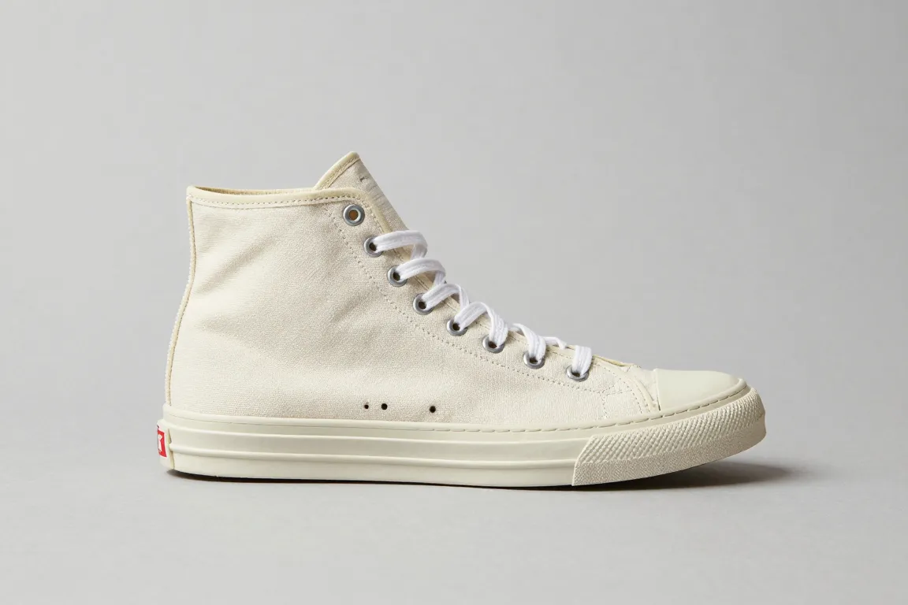

мода · 1917–present · также: Плимсолы, Высокие парусиновые кеды, Спортивные туфли для зала
Туфля из хлопковой парусины на вулканизированной резиновой подошве. Белые или тёмно-синие высокие и низкие кеды с носком-накладкой и тонкой полосой по ранту. Впервые сделаны для баскетбола в 1917 году.

Главная идея
Туфля для площадки — дешёвая ткань на вулканизированной резине: она держится за пол и стоит мало; её простота и есть стиль.
Принципы дизайна
Кройте верх из хлопковой парусины 400–600 г/м² и пришивайте к резиновой полосе по ранту.
Вулканизируйте подошву вместе с верхом в печи, чтобы резина сцепилась с парусиной.
Закрывайте носок резиновой накладкой и ставьте круглую нашлёпку на щиколотку с внутренней стороны высоких кедов.
Берите 8 пар люверсов с плоским хлопковым шнурком.
Печатайте один небольшой знак на нашлёпке; остальное оставляйте простым.
Ставьте подошву 2–3 см, плоскую, с протектором «ромб» или «ёлочка».
Не покрывайте парусину ничем, чтобы она выцветала и мялась.
Антипаттерны
Мягкая амортизирующая промежуточная подошва с воздушными камерами